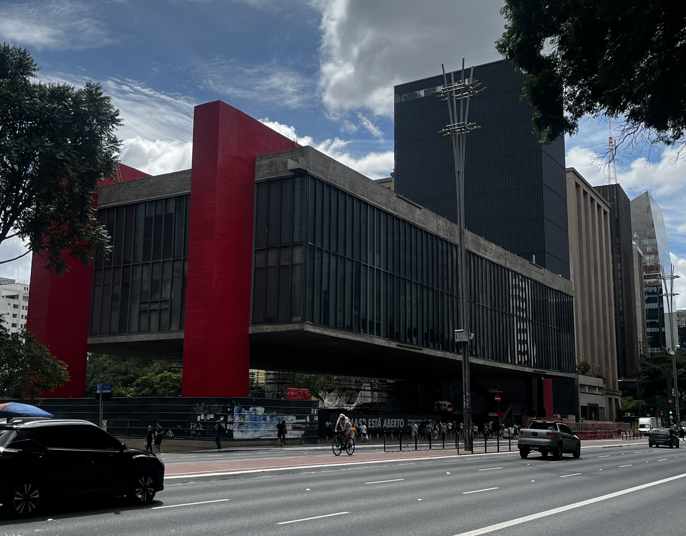
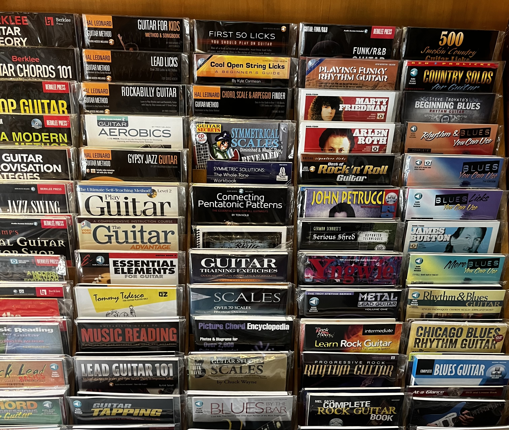
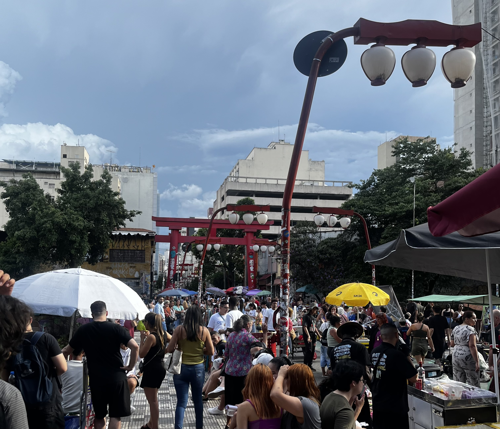
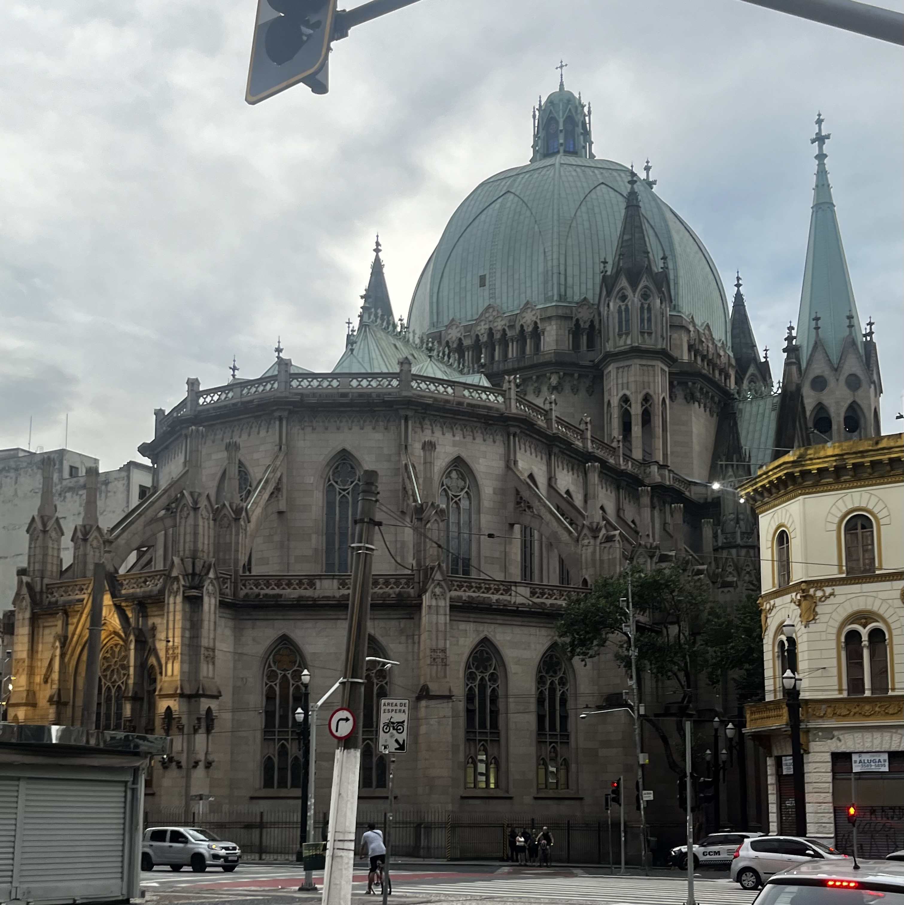

O dia em que encarei o gigante da Paulista: Minha visita ao MASP. Janeiro de 2025. Estou em São Paulo e, como manda a tradição, bato ponto na Avenida Paulista. E lá está ele. Você pode ter visto o MASP em mil fotos, livros de história e cartões-postais, mas nada prepara você para o impacto de vê-lo ao vivo.
Tirei essa foto (acima) em um dia típico paulistano: céu dividido entre nuvens e sol, e a avenida pulsando com vida.
O prédio que flutua
A primeira coisa que me impressionou, de novo, é a arquitetura. O MASP não é só um prédio; é uma declaração. Projetado pela genial Lina Bo Bardi, o museu é um bloco brutalista de concreto e vidro que parece flutuar, suspenso por dois pórticos vermelhos gigantes. Não é só um truque de design. Por baixo dele, há o famoso "vão livre" de mais de 70 metros. É um espaço democrático. No dia em que passei, havia gente descansando, um ciclista (como vocês podem ver na foto), e o burburinho constante da cidade. É uma praça pública coberta, um respiro no meio da selva de pedra.

São Paulo é uma caixa de surpresas. Em um dos meus passeios pela cidade, entrei na loja de livros de música Free Note. Eu não estava preparado. Sabe aquela sensação de "loja de doces"? Foi o que eu senti quando virei um corredor e dei de cara com isso (a foto acima). Não é uma prateleira. É uma parede. Uma biblioteca inteira dedicada a decifrar o braço da guitarra, um centímetro de cada vez.
“Um mar de conhecimento”O que mais me impressionou foi a variedade absurda. É o tipo de lugar onde o "Guitar for Kids" mora tranquilamente ao lado do "Serious Shred" do John Petrucci, sem brigar. Em um único olhar, você viaja do "Gypsy Jazz" para o "Chicago Blues", dá uma passada no "Funk/R&B" e cai em territórios teóricos profundos como "Symmetrical Scales Revealed".
Essa parede é, basicamente, um lembrete físico e intimidador de que não existe "saber tudo" na música. Para cada estilo que você acha que domina, ela faz questão de te mostrar outros 50 que ainda estão esperando para serem explorados.

Olha essa cena. O céu de SP, com aquele drama clássico de "chove-não-chove" que só quem é de lá (ou visita) entende. E no meio da paisagem de prédios, o icônico torii (o portal vermelho) e as lanternas suzuran-to se destacam, avisando: "você não está mais no centro comum". Você está em outro lugar.
A foto não mente: esse "outro lugar" estava lotado.
Isso é a feirinha da Liberdade em pleno vapor. É um mar de gente. Para todo lado que se olha, tem uma barraca, um guarda-sol, e uma multidão se espremendo. Você vê o portal lá no fundo, mas para chegar até ele, é preciso navegar por um oceano de pessoas.
“A energia da muvuca”É uma sobrecarga sensorial, e digo isso como um elogio. O barulho da multidão, o cheiro de takoyaki e tempurá vindo das barracas, o aperto... mas, honestamente? É isso que é a Liberdade no fim de semana.
Não é um passeio zen; é a energia de estar onde tudo acontece. É o Japão (e a China, e a Coreia...) encontrando o Brasil na calçada, todo mundo junto, tentando comprar uma bugiganga ou comer um yakisoba.
Minha dica? Vá com fome. Vá com paciência. E se prepare para ser engolido por uma das experiências mais caoticamente paulistanas que existem.

No meio da correria do centro, parei em frente à Catedral da Sé. Eu honestamente não a conhecia e a escala dela me pegou de surpresa. É uma construção colossal, que parece de outra época e outro lugar. A foto, sob o céu cinzento de SP, mal capta o impacto dessa cúpula verde-azulada e das torres góticas. Mais do que "bonita", a arquitetura é imponente, um verdadeiro gigante de pedra que ancora o caos do Marco Zero.